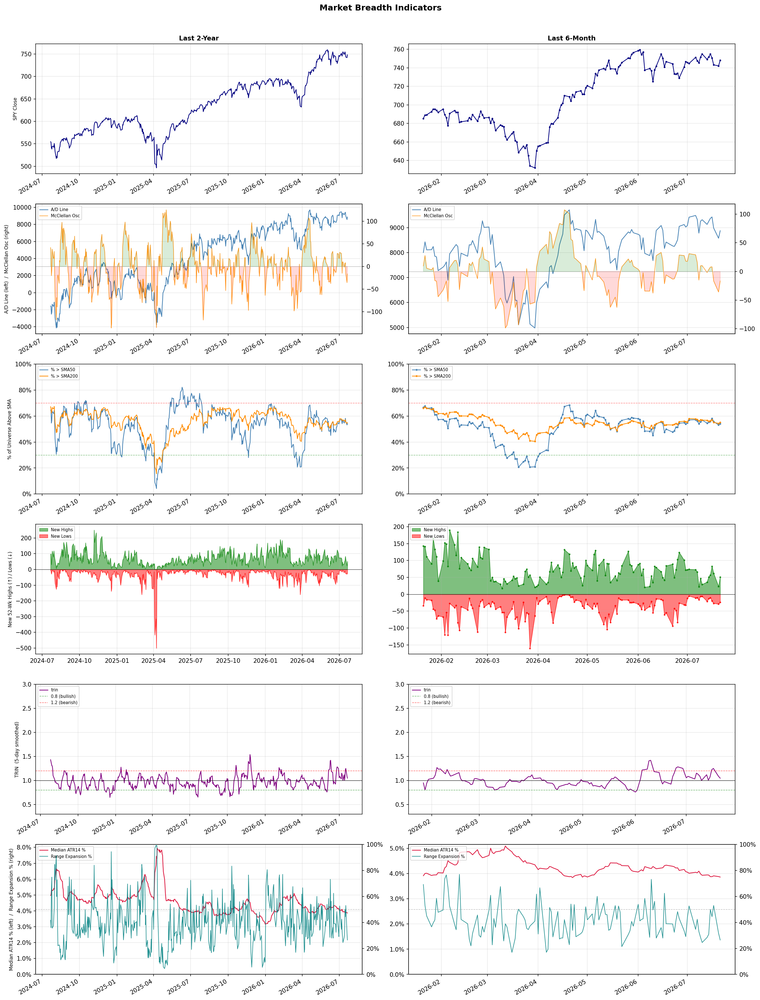

A daily market breadth and sector rotation report for active investors
| Item | Read |
|---|---|
| Regime | Selective Risk-On |
| Risk posture | Selective |
| Universe | 1,338 stocks tracked · 51 new 52-week highs · 30 active swing setups |
| Breadth | 54.1% of tracked stocks are above SMA50 — neutral range, new highs exceed new lows (51 vs 24), McClellan oscillator (breadth momentum) is negative at -16.6 |
| Leadership | Oil & Gas Refining & Marketing, Diagnostics & Research, and Healthcare Plans |
| Weakest groups | Other Industrial Metals & Mining, Uranium, and Gold |
Use this report to prioritize research and chart review; validate entries, stops, liquidity, earnings, and risk before acting.
| Item | Read |
|---|---|
| Primary read | Selective Risk-On regime with Selective risk posture. |
| Research queue | PBF, DINO, MPC, VLO, UGP |
| Leadership focus | Oil & Gas Refining & Marketing, Diagnostics & Research, and Healthcare Plans |
| Caution list | Other Industrial Metals & Mining, Uranium, and Gold |
| Review prompt | Check extension risk, chart location, fundamentals, valuation, and earnings before using any research row. |
| Item | Read |
|---|---|
| Primary read | 2 active risk warnings; use screen output as watchlist input only. |
| Bullish screens | DINO, MPC, PBF, SBRA, DRH |
| Bearish screens | SPRY, BHC, PSKY, WYNN, EVGO |
| Alerts / levels | Automated trigger, stop, ATR, liquidity, reward/risk, and event-risk levels are pending future enrichment. |
| Review prompt | Open the linked chart, define trigger and invalidation, then check liquidity and event risk independently. |
Risk Posture: Selective — screen backdrop supports selective research in leading industries
Metric context: McClellan below -50 = elevated selling pressure; below -100 = washout territory. Range Expansion = share of stocks with daily range above their 20-day average. Signal Density = share of tracked names appearing in signal screens.
| Breadth Date | % > SMA50 | % > SMA200 | New Highs | New Lows | McClellan | Median Range | Avg Range | Median ATR14 | Range Expansion | Signal Density |
|---|---|---|---|---|---|---|---|---|---|---|
| 2026-07-21 | 54.1% | 55.1% | 51 | 24 | -16.6 | 3.0% | 3.6% | 3.9% | 26.5% | 15.4% |

Prior comparison date: July 20, 2026
| Metric | Prior | Current | Change |
|---|---|---|---|
| Regime | Selective Risk-On | Selective Risk-On | unchanged |
| Risk Posture | Cautious | Selective | changed |
| % > SMA50 | 53.1% | 54.1% | +1.0 pts |
| % > SMA200 | 54.4% | 55.1% | +0.7 pts |
| New Highs | 22 | 51 | +29 |
| New Lows | 29 | 24 | +5 |
Top-10 industries entering: Insurance - Life and REIT - Hotel & Motel. Top-10 industries leaving: Advertising Agencies and REIT - Retail. New multi-signal long setups: DRH, IOVA, NAT. New multi-signal short setups: BAK, BHC, CNM, CPRT, EVGO, GGG, MCD.
| Status | Tickers | Read |
|---|---|---|
| Added | BAK, BHC, CI, CNM, CPRT, DRH, EVGO, GGG | New technical screen matches vs prior report. |
| Removed | ABSI, ALL, ANNX, BBAI, BXMT, CB, EPRT, GNW | No longer present in today's technical screen matches. |
| Still Active | ALHC, DBRG, DINO, GH, LBTYK, MPC, PBF, PNR | Appeared in both current and prior reports. |
| Promoted | ALHC, SBRA | Model Screen Score improved by at least 15 points. |
| Downgraded | none | Model Screen Score declined by at least 15 points. |
| Direction | Industry | ETF | Prior Rank | Current Rank | Days | Rank Change |
|---|---|---|---|---|---|---|
| Rose | Oil & Gas Refining & Marketing | CRAK | 84 | 1 | 35 | +83 |
| Rose | Insurance Brokers | N/A | 83 | 16 | 35 | +67 |
| Rose | Insurance - Property & Casualty | KIE | 71 | 7 | 42 | +64 |
| Rose | REIT - Healthcare Facilities | XLRE | 66 | 5 | 42 | +61 |
| Rose | Software - Application | IGV | 79 | 18 | 35 | +61 |
Bull: The Oil & Gas Refining & Marketing sector, as represented by the ETF CRAK, is experiencing a bullish trend primarily due to a combination of rising oil prices and strong demand for refined products, which has led to significant stock performance gains, exemplified by Marathon Petroleum's impressive 52% rally over the past six months. Additionally, the recent headlines highlight a shift in market sentiment, with hopes of Middle East de-escalation potentially stabilizing supply chains, further boosting investor confidence in the sector's profitability and growth prospects. This resurgence after a prolonged period of underperformance indicates that refiners are finally capitalizing on favorable market conditions, making it an attractive investment opportunity.
Bear: While the recent rally in the Oil & Gas Refining & Marketing sector, as represented by CRAK, may seem promising, it is essential to consider the volatility of oil prices and the potential for geopolitical tensions to escalate rather than de-escalate, which could disrupt supply chains and negatively impact margins. Furthermore, the sector's historical reliance on cyclical demand patterns raises concerns about sustainability; any downturn in the economy or shifts towards renewable energy could quickly reverse the gains seen in stocks like Marathon Petroleum, making the current optimism potentially short-lived.
Verdict: The Oil & Gas Refining & Marketing sector is currently benefiting from rising oil prices and robust demand for refined products, driving significant stock gains, particularly for companies like Marathon Petroleum. However, investors should remain cautious of the inherent volatility in oil prices and the risk of escalating geopolitical tensions, which could disrupt supply chains and negatively impact profit margins, potentially reversing the recent bullish trend.
Sources: Yahoo Finance, Google News
Bull: The rising relative strength of the Insurance Brokers industry can be attributed to robust demand for insurance services and ongoing consolidation through mergers and acquisitions, as highlighted in the Yahoo Finance article. Despite recent concerns about AI disrupting the sector, the strong earnings performance of firms like Ryan Specialty, which received top marks in Q1, indicates a resilient business model that can adapt to changing market conditions, suggesting that the long-term fundamentals remain strong. Additionally, the current market correction may present a buying opportunity for investors looking to capitalize on the industry's growth potential.
Bear: While the relative strength of the Insurance Brokers industry may seem promising, the recent headlines indicate a growing unease about the disruptive potential of AI technologies, which could fundamentally alter the landscape of insurance brokerage. The decline from five-year highs and the compression of multiples suggest that the market is already pricing in these disruptions and potential challenges, indicating that the strong earnings of select firms may not be enough to offset broader industry risks. Furthermore, the reliance on M&A as a growth strategy could prove precarious in a tightening economic environment, where integration challenges and regulatory scrutiny may hinder long-term value creation.
Verdict: The Insurance Brokers industry's rising strength is primarily driven by robust demand for insurance services and ongoing consolidation through mergers and acquisitions, which are enhancing market positioning and operational efficiencies. However, a key risk lies in the potential disruption from AI technologies, which could reshape the industry dynamics and challenge traditional business models, suggesting investors should remain cautious and monitor technological advancements closely while considering entry points during market corrections.
Sources: Google News
Bull: The Property & Casualty insurance sector is experiencing rising relative strength primarily due to increased digitalization and exposure growth, as highlighted in recent headlines discussing the positive outlook for several insurers. The mention of "5 P&C Insurers to Buy" indicates a favorable investment sentiment, while the strong performance of companies like Assured Guaranty and Employers Holdings suggests robust fundamentals and operational resilience, further driving investor confidence in the sector. Additionally, the overall positive sentiment surrounding the State Street SPDR S&P Insurance ETF (KIE) indicates that market participants are recognizing the potential for sustained growth in this industry.
Bear: While the bull case highlights rising relative strength and digitalization as key drivers of growth in the Property & Casualty insurance sector, it overlooks significant headwinds such as increasing competition, rising claims costs, and potential regulatory changes that could pressure margins. Additionally, the recent headlines may reflect short-term optimism rather than sustainable fundamentals, as the industry's reliance on technology could expose insurers to cybersecurity risks and operational disruptions, undermining long-term growth prospects.
Verdict: The Property & Casualty insurance sector is likely experiencing a move driven by increased digitalization and exposure growth, which enhance operational efficiency and customer engagement, thereby attracting investor interest. However, key risks remain, including rising claims costs, heightened competition, and potential regulatory changes that could pressure margins and undermine long-term growth. Investors should remain cautious and monitor these factors closely while considering positions in this sector.
Sources: Yahoo Finance, Google News
Bull: The rising relative strength of Healthcare Facilities REITs can be attributed to the increasing demand for healthcare services, which is bolstered by an aging population and ongoing healthcare reforms. Recent headlines highlighting the "5 Best Healthcare REIT Stocks for 2026" and "Best Health Care REITs for a Retirement Portfolio" suggest a growing recognition of these investments as stable, income-generating assets, especially in a market where financial stocks are experiencing volatility. This trend indicates that investors are seeking the relative safety and consistent cash flow offered by healthcare REITs amidst broader market fluctuations.
Bear: While the aging population and ongoing healthcare reforms may drive demand for healthcare services, the rising relative strength of Healthcare Facilities REITs could be misleading, as it may reflect a flight to safety rather than genuine growth prospects. Additionally, the financial sector's volatility could be prompting investors to seek refuge in healthcare REITs, but this does not address the underlying challenges these REITs face, such as rising interest rates, potential overvaluation, and increasing operational costs that could erode profit margins and limit future returns.
Verdict: The rising strength of Healthcare Facilities REITs is fundamentally driven by the increasing demand for healthcare services due to an aging population and ongoing healthcare reforms, making these investments attractive for their stability and income generation in a volatile market. However, investors should remain cautious of key risks, particularly the potential impact of rising interest rates and operational costs, which could undermine profit margins and future returns. It is advisable to closely monitor these economic indicators and assess valuations before making investment decisions in this sector.
Sources: Yahoo Finance, Google News
Bull: The Software - Application sector is likely experiencing a rise in relative strength due to the positive sentiment surrounding the broader technology market, particularly as semiconductor recovery supports overall market performance, as noted in recent headlines. Furthermore, with key earnings reports on the horizon, investors are likely positioning themselves in software stocks, which are viewed as resilient and essential in the face of economic fluctuations, especially with ongoing discussions about the transformative impact of AI on the sector. This combination of recovery in tech fundamentals and anticipation of strong earnings is driving bullish sentiment in the software application industry.
Bear: While the bull thesis highlights positive sentiment and a semiconductor recovery, it overlooks the significant structural risks facing the software application sector, as noted in recent discussions about a potential sell-off. The market's current enthusiasm may be driven more by short-term narratives around AI rather than sustainable fundamentals, and the mixed signals from equity futures suggest investor caution, particularly in light of recent weakness in chipmaker stocks that could impact software demand. Additionally, the anticipation of earnings reports might lead to volatility rather than sustained growth, as any disappointments could trigger a sharp correction in valuations.
Verdict: The Software - Application sector is likely rising due to a combination of positive sentiment from the broader tech market's recovery, particularly in semiconductors, and strong investor positioning ahead of key earnings reports. However, a key risk lies in the potential for a market correction if earnings disappoint or if the current enthusiasm for AI-driven growth proves to be unsustainable, suggesting that investors should remain cautious and closely monitor earnings outcomes.
Sources: Yahoo Finance, Google News
| Direction | Industry | ETF | Prior Rank | Current Rank | Days | Rank Change |
|---|---|---|---|---|---|---|
| Fell | Electrical Equipment & Parts | XLI | 15 | 82 | 35 | -67 |
| Fell | Solar | TAN | 15 | 80 | 42 | -65 |
| Fell | Copper | COPX | 14 | 75 | 35 | -61 |
| Fell | Semiconductors | SOXX | 4 | 61 | 35 | -57 |
| Fell | Rental & Leasing Services | N/A | 12 | 69 | 28 | -57 |
Bear: While the bull analyst attributes the decline in the Electrical Equipment & Parts sector's relative strength to a shift toward high-growth areas like semiconductors, this overlooks fundamental challenges facing the sector, such as rising input costs, supply chain disruptions, and potential regulatory headwinds that could dampen profitability. Additionally, the reliance on AI and technology trends may lead to overvaluation in those sectors, creating a risk of a market correction that could further expose the vulnerabilities of the Electrical Equipment & Parts sector, which may not benefit from the same momentum.
Bull: The Electrical Equipment & Parts sector is likely experiencing a decline in relative strength due to the broader market's focus on high-growth areas, particularly semiconductor stocks, which have garnered significant attention and investment as indicated by headlines about their recovery and the influx of AI-related capital. Additionally, as industrials have surged 17%, investors may be reallocating funds towards sectors perceived as more innovative or growth-oriented, leaving the Electrical Equipment & Parts sector relatively underperforming amid this shift in market sentiment.
Verdict: The decline in the Electrical Equipment & Parts sector is primarily driven by a market shift towards high-growth areas like semiconductors, which has diverted investment away from traditional sectors. However, the key risk highlighted by the bear case is the sector's exposure to rising input costs and supply chain disruptions, which could further erode profitability and exacerbate its underperformance if economic conditions worsen or if there's a correction in overvalued tech stocks. Investors should closely monitor these fundamental challenges while considering reallocating investments to more resilient sectors.
Sources: Yahoo Finance, Google News
Bear: While the bull analyst attributes the decline in relative strength of the solar industry to macroeconomic pressures and regulatory changes, it is crucial to recognize that the solar sector is also facing increasing competition and market saturation. The recent headlines indicate a growing disillusionment among investors, as evidenced by the decision to sell TAN due to concerns over overvaluation and the sustainability of the rally. Furthermore, the potential for a consumption tax in China may not only create uncertainty but also lead to a significant shakeout, disproportionately impacting smaller players and leading to a consolidation that could stifle innovation and growth in the long term.
Bull: The solar industry, represented by the TAN ETF, is experiencing a decline in relative strength primarily due to macroeconomic pressures and regulatory changes that are creating uncertainty. The mention of a "quiet $3,350 tax on $50,000 over a decade" indicates potential financial burdens that could deter investment, while the "consumption tax" from Beijing suggests a significant policy shift that may lead to a shakeout in the industry. Additionally, despite strong earnings and a bullish outlook, the market's reaction to these regulatory developments and the subsequent selling by some investors, as highlighted in the headlines, is contributing to the overall downward trend in solar stocks.
Verdict: The solar industry's decline is primarily driven by macroeconomic pressures, regulatory uncertainties, and increasing competition, which are leading to investor disillusionment and selling pressure on ETFs like TAN. The key risk highlighted by the bear case is the potential for a consumption tax in China, which could exacerbate market saturation and disproportionately affect smaller players, hindering innovation and long-term growth. Investors should closely monitor regulatory developments and competitive dynamics to assess the sustainability of the sector's recovery.
Sources: Yahoo Finance, Google News
Bear: While the bull analyst points to long-term demand from electrification and AI-related infrastructure as a supportive factor for copper prices, the immediate concerns regarding a potential slowdown in global manufacturing cannot be overlooked. If economic conditions deteriorate, demand for copper could significantly decline, leading to oversupply and price pressure, particularly as investors may pivot towards more resilient sectors like AI, further diminishing interest in copper investments. Additionally, the rising costs of mining and environmental regulations could further squeeze margins for copper miners, making the sector less attractive in the near term.
Bull: Copper's relative strength is likely falling due to concerns over global manufacturing weakening, as highlighted in the headline "If Global Manufacturing Weakens, Here’s What Happens to This Copper ETF." This sentiment is compounded by the competitive landscape of investment options, with discussions around copper miners versus copper futures and the emergence of alternative sectors like AI, which may divert investor attention and capital away from copper-focused investments. However, the underlying demand from electrification and AI-related infrastructure could ultimately support copper prices, making it a compelling long-term investment despite short-term volatility.
Verdict: The copper industry is currently experiencing a downward trend primarily due to concerns over a potential slowdown in global manufacturing, which could lead to decreased demand and oversupply, pressuring prices. While long-term demand from electrification and AI infrastructure offers some support, the key risk lies in the immediate economic conditions; if manufacturing continues to weaken, it could significantly diminish copper's appeal as investors shift focus to more resilient sectors like AI. Investors should monitor manufacturing indicators closely and consider the potential for further price declines in the short term before committing capital to copper investments.
Sources: Yahoo Finance, Google News
Bear: While the recent rallies in semiconductor stocks may appear promising, they are primarily driven by short-term trading sentiment rather than sustainable fundamentals. The mention of overcrowding and overselling indicates a market that could be ripe for a correction, especially as investor attention shifts to more lucrative sectors like AI, which may divert capital away from semiconductors. Furthermore, the significant ETF inflows could be more indicative of a broader market recovery rather than a specific endorsement of semiconductor fundamentals, raising concerns about the long-term viability of these stocks.
Bull: The semiconductor industry is experiencing a relative strength decline primarily due to market volatility and investor sentiment shifting towards other sectors, as indicated by headlines highlighting a thriving AI-adjacent sector. Additionally, while semiconductor stocks like Intel, AMD, and Broadcom have seen short-term rallies, the overarching narrative of overcrowding and overselling suggests that investors are cautious, leading to a temporary pullback in relative strength despite a significant increase in ETF inflows and a notable rebound in stock prices.
Verdict: The semiconductor industry's recent decline can be attributed to a combination of market volatility and shifting investor sentiment towards sectors perceived as having stronger growth potential, such as AI. The key risk highlighted by the bear thesis is the potential for a correction in semiconductor stocks, as the current rallies may lack sustainable fundamentals and could be driven by short-term trading rather than long-term demand. Investors should remain cautious and consider reallocating capital to sectors with more robust growth narratives while monitoring semiconductor fundamentals closely.
Sources: Yahoo Finance, Google News
Bear: While the bull analyst attributes the decline in the Rental & Leasing Services industry to a shift in investor sentiment towards high-growth sectors, this overlooks fundamental challenges facing the industry itself. Rising interest rates and inflationary pressures are likely increasing operational costs and reducing consumer spending, which could lead to decreased demand for rental services. Furthermore, as companies and consumers prioritize capital efficiency, the reliance on leasing rather than purchasing may diminish, making the rental and leasing sector less attractive in a tightening economic environment.
Bull: The Rental & Leasing Services industry is likely experiencing a decline in relative strength due to the broader market's focus on high-growth sectors like AI and commercial real estate, as highlighted by the significant contracts won by AI compute stocks and the positive outlook for commercial real estate stocks. This shift in investor sentiment towards technology and real estate may be diverting capital away from rental and leasing services, which are perceived as more stable but less dynamic in the current economic environment. Additionally, the headlines suggest a rally in sectors that promise higher returns, overshadowing the more traditional rental and leasing services.
Verdict: The decline in the Rental & Leasing Services industry is primarily driven by rising interest rates and inflation, which are increasing operational costs and reducing consumer spending, thereby dampening demand for rental services. Additionally, as companies and consumers focus on capital efficiency, the traditional reliance on leasing may wane, posing a significant risk to the industry's stability. Investors should closely monitor economic indicators and consumer behavior to assess potential recovery or further decline in this sector.
Sources: Google News
| Industry | Rank | ETF | 7d | 14d | 28d | 42d | Chg 42d | Size | 20D | 60D | Composite | Active Setups |
|---|---|---|---|---|---|---|---|---|---|---|---|---|
| Oil & Gas Refining & Marketing | 1 | CRAK | 3 | 28 | 73 | 72 | +71 | 7 | 32.3% | 30.1% | 0.964 | 0 |
| Diagnostics & Research | 2 | N/A | 2 | 4 | 9 | 8 | +6 | 16 | 14.1% | 36.9% | 0.922 | 1 |
| Healthcare Plans | 3 | IHF | 1 | 1 | 1 | 2 | -1 | 10 | 6.2% | 50.6% | 0.890 | 2 |
| Health Information Services | 4 | N/A | 4 | 7 | 16 | 20 | +16 | 12 | 14.8% | 32.7% | 0.887 | 0 |
| REIT - Healthcare Facilities | 5 | XLRE | 17 | 16 | 46 | 66 | +61 | 10 | 14.1% | 16.7% | 0.886 | 1 |
| Medical Care Facilities | 6 | IHF | 10 | 6 | 13 | 27 | +21 | 9 | 12.9% | 17.6% | 0.876 | 0 |
| Insurance - Property & Casualty | 7 | KIE | 5 | 5 | 14 | 71 | +64 | 8 | 10.2% | 16.1% | 0.865 | 1 |
| REIT - Office | 8 | XLRE | 13 | 10 | 5 | 5 | -3 | 8 | 6.0% | 31.8% | 0.847 | 0 |
| REIT - Hotel & Motel | 9 | XLRE | 12 | 13 | 3 | 3 | -6 | 9 | 4.0% | 33.8% | 0.825 | 0 |
| Insurance - Life | 10 | N/A | 14 | 18 | 28 | 38 | +28 | 7 | 8.5% | 12.9% | 0.821 | 0 |
Rank columns (7d–42d) show the industry's rank that many trading days ago — lower is stronger. Chg 42d = rank change vs 42 trading days ago — positive means the industry moved up. 20D and 60D are the mean stock return within the industry over that period. Active Setups: count of today's swing-trade candidates from this industry appearing across all signal screens.
| Industry | Rank | ETF | 7d | 14d | 28d | 42d | Chg 42d | Size | 20D | 60D | Composite | Active Setups |
|---|---|---|---|---|---|---|---|---|---|---|---|---|
| Other Industrial Metals & Mining | 88 | N/A | 88 | 86 | 57 | 84 | -4 | 21 | -20.9% | -23.0% | 0.054 | 0 |
| Uranium | 87 | URA | 85 | 88 | 81 | 95 | +8 | 6 | -14.3% | -30.6% | 0.058 | 0 |
| Gold | 86 | GDX | 87 | 85 | 86 | 97 | +11 | 27 | -10.2% | -22.6% | 0.087 | 0 |
| Utilities - Renewable | 85 | N/A | 83 | 83 | 54 | N/A | N/A | 7 | -17.1% | -11.0% | 0.108 | 0 |
| Aerospace & Defense | 84 | ITA | 86 | 79 | 79 | 56 | -28 | 26 | -12.6% | -18.2% | 0.119 | 0 |
| Specialty Industrial Machinery | 83 | N/A | 78 | 76 | 60 | 74 | -9 | 21 | -11.4% | -16.4% | 0.156 | 1 |
| Electrical Equipment & Parts | 82 | XLI | 61 | 48 | 24 | 24 | -58 | 12 | -25.7% | -4.6% | 0.189 | 1 |
| Utilities - Independent Power Producers | 81 | XLU | 55 | 70 | 70 | 96 | +15 | 5 | -7.3% | -9.7% | 0.207 | 0 |
| Solar | 80 | TAN | 65 | 67 | 47 | 15 | -65 | 8 | -16.3% | 0.9% | 0.209 | 1 |
| Chemicals | 79 | N/A | 84 | 84 | 83 | 91 | +12 | 8 | -5.9% | -17.8% | 0.219 | 0 |
Rank columns (7d–42d) show the industry's rank that many trading days ago — lower is stronger. Chg 42d = rank change vs 42 trading days ago — positive means the industry moved up. 20D and 60D are the mean stock return within the industry over that period. Active Setups: count of today's swing-trade candidates from this industry appearing across all signal screens.
These are research candidates from top-ranked stocks, capped at five names per industry to avoid over-concentration. Returns shown (60D, 120D, 250D) are historical — they reflect where prices have already moved, not forward expectations. Extension Risk flags names that may require extra patience or a better entry point. They are not buy signals.
Chart: TV = TradingView chart (opens in browser); PDF = local chart file (if downloaded).
| Ticker | Name | Industry | Industry Rank | Market Cap | 60D Hist | 120D Hist | 250D Hist | Extension Risk | Research Reason | Chart |
|---|---|---|---|---|---|---|---|---|---|---|
| PBF | PBF Energy | Oil & Gas Refining & Marketing | 1 | N/A | 61.2% | 99.9% | 175.1% | Extended | Top-ranked in industry; extended | TV |
| DINO | HF Sinclair | Oil & Gas Refining & Marketing | 1 | N/A | 54.0% | 83.6% | 104.5% | Extended | Top-ranked in industry; extended | TV |
| MPC | Marathon Petroleum | Oil & Gas Refining & Marketing | 1 | N/A | 44.6% | 86.1% | 82.5% | Constructive | Top-ranked in industry | TV |
| VLO | Valero Energy | Oil & Gas Refining & Marketing | 1 | N/A | 34.6% | 72.1% | 116.9% | Constructive | Top-ranked in industry | TV |
| UGP | Ultrapar Participacoes | Oil & Gas Refining & Marketing | 1 | N/A | 9.6% | 31.9% | 121.1% | Constructive | Top-ranked in industry | TV |
| PSNL | Personalis | Diagnostics & Research | 2 | N/A | 127.8% | 30.2% | 109.0% | Very extended | Top-ranked in industry; very extended | TV |
| NEO | NeoGenomics | Diagnostics & Research | 2 | N/A | 82.7% | 15.9% | 125.1% | Extended | Top-ranked in industry; extended | TV |
| ADPT | Adaptive Biotechnologies | Diagnostics & Research | 2 | N/A | 63.4% | 17.4% | 114.4% | Extended | Top-ranked in industry; extended | TV |
| ILMN | Illumina | Diagnostics & Research | 2 | N/A | 53.5% | 26.6% | 88.7% | Extended | Top-ranked in industry; extended | TV |
| IQV | IQVIA Holdings | Diagnostics & Research | 2 | N/A | 25.5% | -16.4% | 7.6% | Constructive | Top-ranked in industry | TV |
| HUM | Humana | Healthcare Plans | 3 | N/A | 88.1% | 94.5% | 74.9% | Extended | Top-ranked in industry; extended | TV |
| OSCR | Oscar Health | Healthcare Plans | 3 | N/A | 87.3% | 106.8% | 109.3% | Extended | Top-ranked in industry; extended | TV |
| PGNY | Progyny | Healthcare Plans | 3 | N/A | 82.5% | 32.9% | 40.3% | Extended | Top-ranked in industry; extended | TV |
| CVS | CVS Health | Healthcare Plans | 3 | N/A | 40.2% | 53.6% | 81.1% | Constructive | Top-ranked in industry | TV |
| UNH | UnitedHealth | Healthcare Plans | 3 | N/A | 23.1% | 54.4% | 53.0% | Constructive | Top-ranked in industry | TV |
| TXG | 10x Genomics | Health Information Services | 4 | N/A | 120.4% | 118.3% | 263.4% | Very extended | Top-ranked in industry; very extended | TV |
| TDOC | Teladoc Health | Health Information Services | 4 | N/A | 70.4% | 64.3% | 15.3% | Extended | Top-ranked in industry; extended | TV |
| VEEV | Veeva Systems | Health Information Services | 4 | N/A | 21.2% | -13.1% | -33.6% | Constructive | Top-ranked in industry | TV |
| CERT | Certara | Health Information Services | 4 | N/A | 14.2% | -29.2% | -35.5% | Constructive | Top-ranked in industry | TV |
| WAY | Waystar Holding | Health Information Services | 4 | N/A | -13.4% | -23.8% | -41.2% | Lagging | Top-ranked in industry; lagging | TV |
These are technical screen matches from existing signal files. They are not trade recommendations. Trigger, stop, ATR, liquidity, reward/risk, and event risk still require separate validation until those inputs are available.
Model Screen Score is weighted by signal count, industry rank, freshness, and setup type. It is not a probability of profit, expected return, or suitability rating. Industry cap: max 3 candidates per industry.
Signal glossary: Momentum Pullback = stock in an uptrend that has pulled back 10–30% and shows re-entry conditions. MA Compression = short- and long-term moving averages converging, often preceding a directional move. Three-Day Up/Down = three consecutive closes in the same direction. New 52Wk High/Low = price reached a new annual extreme.
Chart: TV = TradingView chart (opens in browser); PDF = local chart file (if downloaded).
| Ticker | Industry | Setups | Close | Industry Rank | Signal Count | Model Screen Score | Reason | Chart |
|---|---|---|---|---|---|---|---|---|
| DINO | Oil & Gas Refining & Marketing | New 52Wk High; Three-Day Up | 91.69 | 1 | 2 | 100 | Multi-signal; top industry breakout | TV |
| MPC | Oil & Gas Refining & Marketing | New 52Wk High; Three-Day Up | 319.76 | 1 | 2 | 100 | Multi-signal; top industry breakout | TV |
| PBF | Oil & Gas Refining & Marketing | New 52Wk High; Three-Day Up | 66.05 | 1 | 2 | 100 | Multi-signal; top industry breakout | TV |
| SBRA | REIT - Healthcare Facilities | MA Compression; New 52Wk High | 22.04 | 5 | 2 | 98 | Multi-signal; top industry breakout | TV |
| DRH | REIT - Hotel & Motel | New 52Wk High; Three-Day Up | 12.97 | 9 | 2 | 85 | Multi-signal; top industry breakout | TV |
| RLJ | REIT - Hotel & Motel | New 52Wk High; Three-Day Up | 12.24 | 9 | 2 | 85 | Multi-signal; top industry breakout | TV |
| IOVA | Biotechnology | New 52Wk High; Three-Day Up | 5.48 | 15 | 2 | 85 | Multi-signal; new-high strength | TV |
| PBR | Oil & Gas Integrated | Momentum Pullback; Three-Day Up | 18.54 | 19 | 2 | 77 | Multi-signal; pullback setup | TV |
| NAT | Oil & Gas Midstream | New 52Wk High; Three-Day Up | 6.47 | 24 | 2 | 77 | Multi-signal; new-high strength | TV |
| SGHC | Gambling | New 52Wk High; Three-Day Up | 15.59 | 31 | 2 | 70 | Multi-signal; new-high strength | TV |
| DBRG | Asset Management | New 52Wk High; Three-Day Up | 15.84 | 55 | 2 | 65 | Multi-signal; new-high strength | TV |
| WT | Asset Management | New 52Wk High; Three-Day Up | 20.69 | 55 | 2 | 65 | Multi-signal; new-high strength | TV |
| GH | Diagnostics & Research | Momentum Pullback | 152.29 | 2 | 1 | 65 | Single-signal; top industry pullback | TV |
| PSNL | Diagnostics & Research | Momentum Pullback | 13.44 | 2 | 1 | 65 | Single-signal; top industry pullback | TV |
| ALHC | Healthcare Plans | Momentum Pullback | 21.50 | 3 | 1 | 65 | Single-signal; top industry pullback | TV |
| CI | Healthcare Plans | MA Compression | 290.49 | 3 | 1 | 60 | Single-signal; top industry setup | TV |
Bearish setups — stocks making new lows or showing persistent downside patterns. Validate carefully before acting.
| Ticker | Industry | Setups | Close | Industry Rank | Signal Count | Model Screen Score | Reason | Chart |
|---|---|---|---|---|---|---|---|---|
| SPRY | Biotechnology | New 52Wk Low; Three-Day Down | 6.36 | 15 | 2 | 55 | Multi-signal; new-low weakness | TV |
| BHC | Drug Manufacturers - Specialty & Generic | New 52Wk Low; Three-Day Down | 4.52 | 26 | 2 | 40 | Multi-signal; new-low weakness | TV |
| PSKY | Entertainment | New 52Wk Low; Three-Day Down | 8.53 | 43 | 2 | 35 | Multi-signal; new-low weakness | TV |
| WYNN | Resorts & Casinos | New 52Wk Low; Three-Day Down | 94.63 | 46 | 2 | 35 | Multi-signal; new-low weakness | TV |
| EVGO | Specialty Retail | New 52Wk Low; Three-Day Down | 1.60 | 52 | 2 | 35 | Multi-signal; new-low weakness | TV |
| MCD | Restaurants | New 52Wk Low; Three-Day Down | 263.91 | 53 | 2 | 35 | Multi-signal; new-low weakness | TV |
| PSEC | Asset Management | New 52Wk Low; Three-Day Down | 2.15 | 55 | 2 | 35 | Multi-signal; new-low weakness | TV |
| CPRT | Specialty Business Services | New 52Wk Low; Three-Day Down | 27.17 | 59 | 2 | 35 | Multi-signal; new-low weakness | TV |
| LBTYK | Telecom Services | New 52Wk Low; Three-Day Down | 9.95 | 67 | 2 | 25 | Multi-signal; new-low weakness | TV |
| TU | Telecom Services | New 52Wk Low; Three-Day Down | 10.18 | 67 | 2 | 25 | Multi-signal; new-low weakness | TV |
| CNM | Industrial Distribution | New 52Wk Low; Three-Day Down | 43.37 | 76 | 2 | 25 | Multi-signal; new-low weakness | TV |
| BAK | Chemicals | New 52Wk Low; Three-Day Down | 2.32 | 79 | 2 | 25 | Multi-signal; new-low weakness | TV |
| GGG | Specialty Industrial Machinery | New 52Wk Low; Three-Day Down | 73.13 | 83 | 2 | 15 | Multi-signal; new-low weakness | TV |
| PNR | Specialty Industrial Machinery | New 52Wk Low; Three-Day Down | 61.48 | 83 | 2 | 15 | Multi-signal; new-low weakness | TV |
How To Use This Report
| Use | Purpose |
|---|---|
| Market map | Start with breadth, regime, risk warnings, and what changed since the prior report. |
| Industry scan | Use leading, deteriorating, rising, and declining industries to focus research. |
| Research queue | Treat long-term candidates as names for deeper fundamental, valuation, and chart review. |
| Technical review | Treat bullish and bearish screen matches as watchlist inputs that require independent trigger, stop, liquidity, and event-risk checks. |
| Source follow-up | Use chart links and source files to verify raw inputs before relying on any row. |
What This Report Is Not
| Not | Meaning |
|---|---|
| Investment advice | The report does not evaluate personal objectives, risk tolerance, tax situation, account type, or suitability. |
| Buy/sell recommendation | Named tickers are research candidates or screen matches, not recommendations to transact. |
| Price target | The report does not provide fair value estimates, targets, or expected returns. |
| Trade plan | Trigger, stop, sizing, reward/risk, liquidity, and event-risk review remain separate user work. |
| Performance claim | Model Screen Score is not validated historical performance or a forecast of future results. |
| Item | Note |
|---|---|
| Version | Daily Report Methodology v1 |
| Model Screen Score | Screen-fit rank based on signal count, industry rank, freshness, and setup type. |
| Not predictive proof | The score is not expected return, probability of profit, historical validation, or suitability analysis. |
| Industry ranks | Composite industry ranks use existing daily ranking outputs and historical rank columns when available. |
| Research candidates | Long-term rows are research candidates from ranked stocks and leading industries, with historical returns labeled as historical only. |
| Technical matches | Bullish and bearish rows are screen matches requiring independent chart, trigger, stop, liquidity, and event-risk review. |
| Source | Status | Rows | Path |
|---|---|---|---|
| Market breadth | present | 1253 | breadth_20260721.csv |
| Industry composite rankings | present | 88 | all_industry_composite_20260721.csv |
| Top ranked stocks | present | 96 | top_ranked_composite_20260721.csv |
| All ranked stocks | present | 1338 | all_stocks_composite_sorted_20260721.csv |
| Top momentum pullbacks | present | 1488 | top_momentum_pullbacks_20260721.csv |
| MA compression | present | 1488 | ma_compression_stocks_20260721.csv |
| Three-day up/down | present | 161 | three_day_up_down_stocks_20260721.csv |
| New 52-week members | present | 75 | breadth_new_52wk_members_20260721.csv |
This report is generated from automated technical screens and is for informational and research purposes only. It is not investment advice, a solicitation, or a recommendation to buy or sell any security. Past performance is not indicative of future results. You are solely responsible for your own investment decisions. Consult a licensed financial advisor before acting on any information herein.